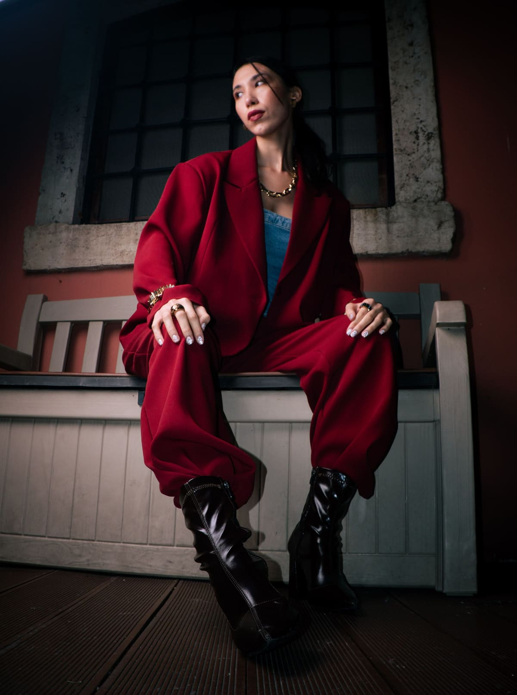
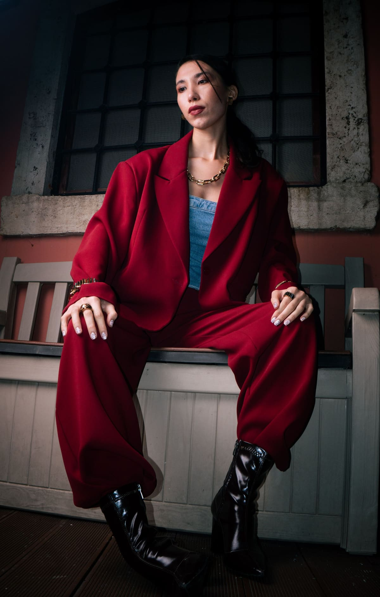
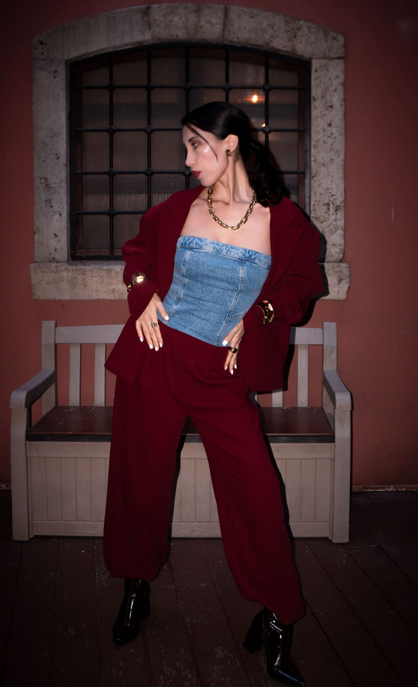
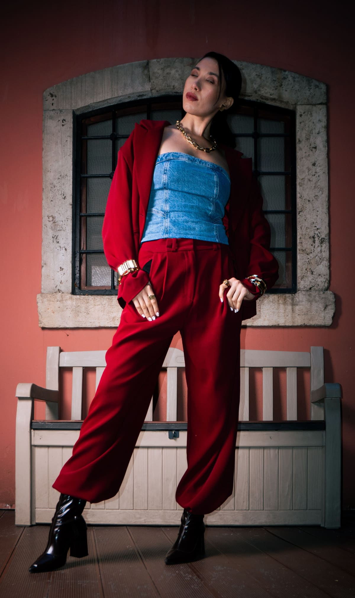
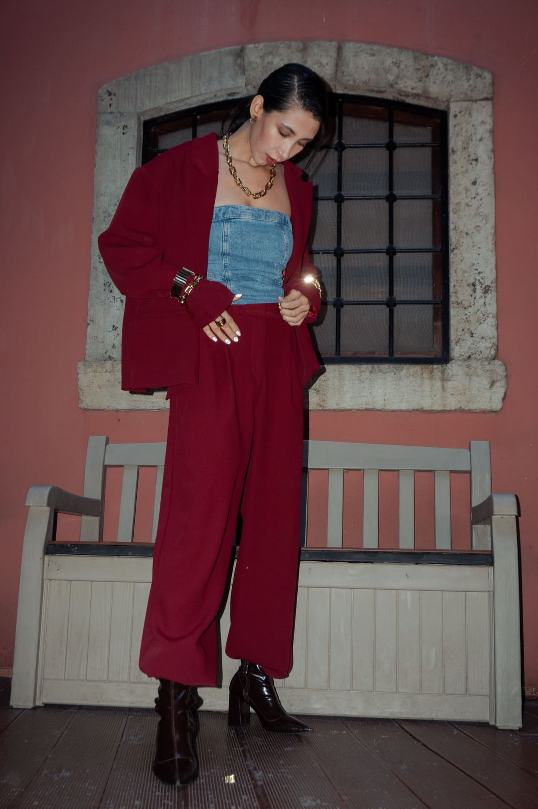
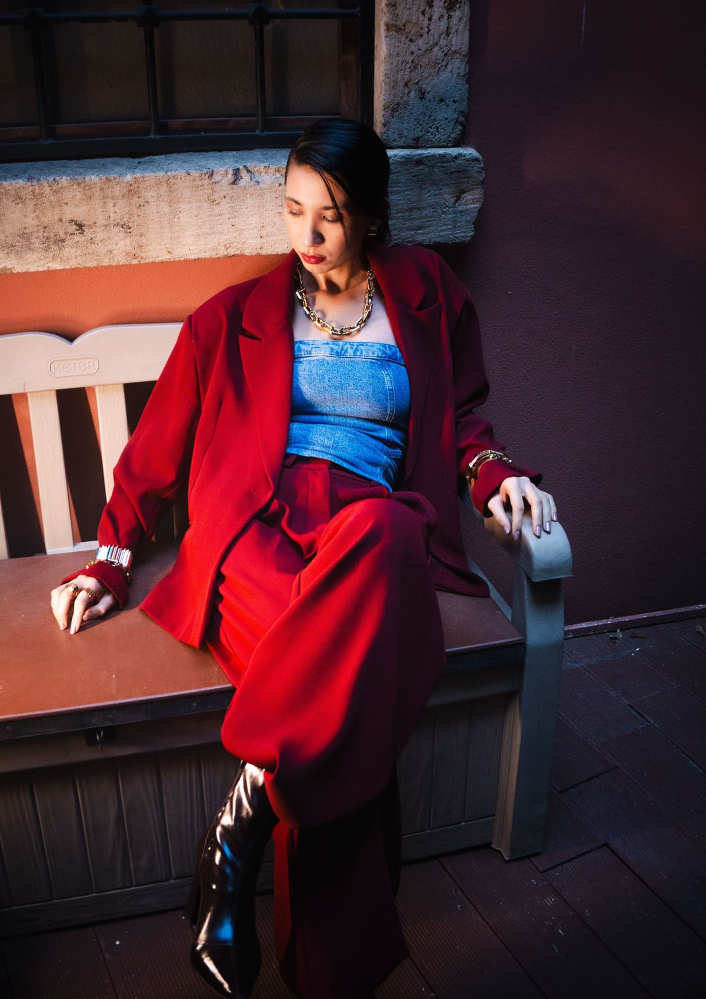
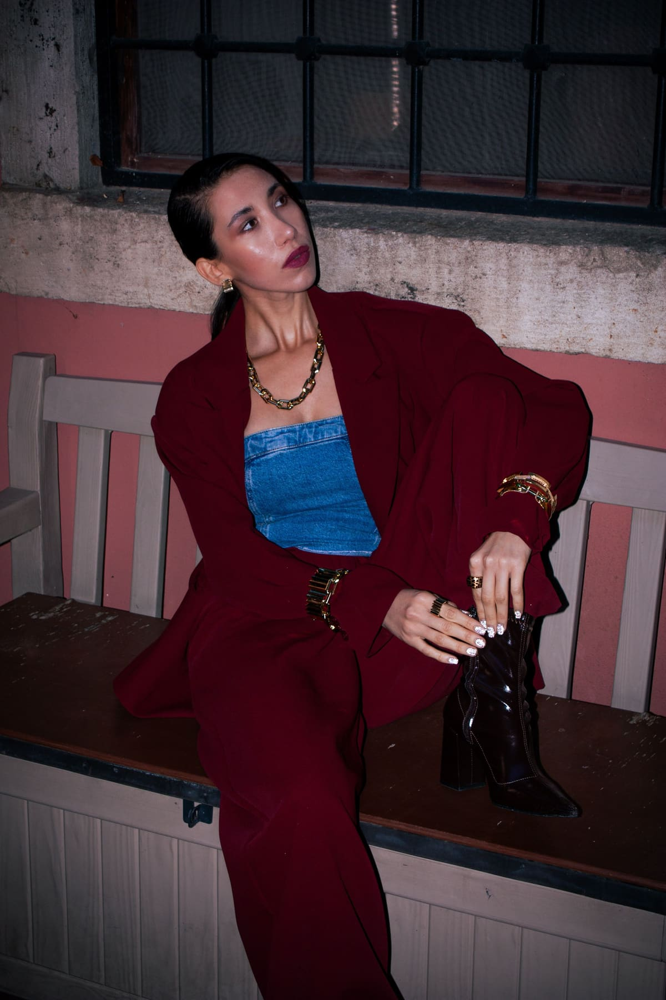
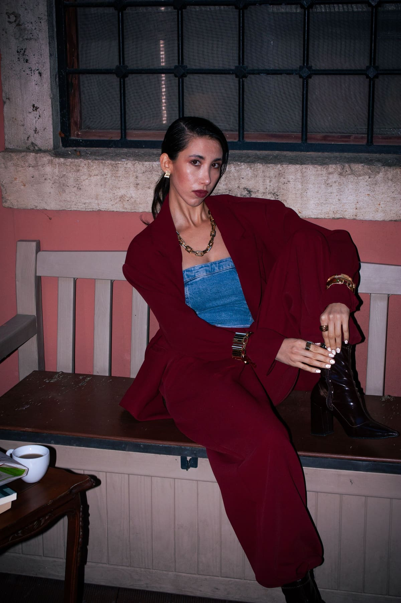
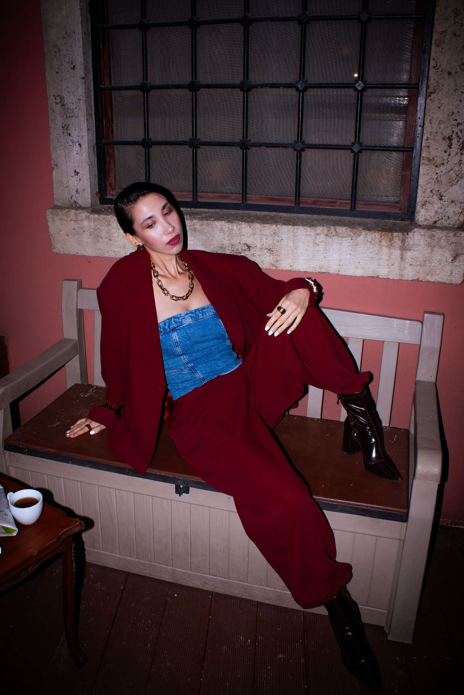

Shoot 05 of 06 · Fashion & editorial
Burgundy suit
An editorial story for a tailoring label: one suit, shot with flash on location.
- Photographs
- Helin Gezer / Pexels
- The session
- 12 frames, 4 selects
- Direction
- Direct flash, an oversized burgundy suit over a denim top, a pink wall and a stone window. The suit changes shape with every pose.
- Where it could run
- Campaign hero, an editorial spread, a story sequence and a shop window poster.
01 · The contact sheet
Every frame from the day.
All 12 frames, numbered. Red squares mark our four selects. Press Pick on any frame to add it to your brief.
-

-

-

-

-

-

-

-

-

-

-

-


Our selects: 4Your picks: 0
02 · The selects
Four frames, in order.
The edit as it would run: one frame across the page, a pair, then one on its own.
03 · Outputs
One frame, three places.
Frame 07, cropped for a website banner, a feed post and a story. Each crop is centred on the subject, so nothing that matters is cut.